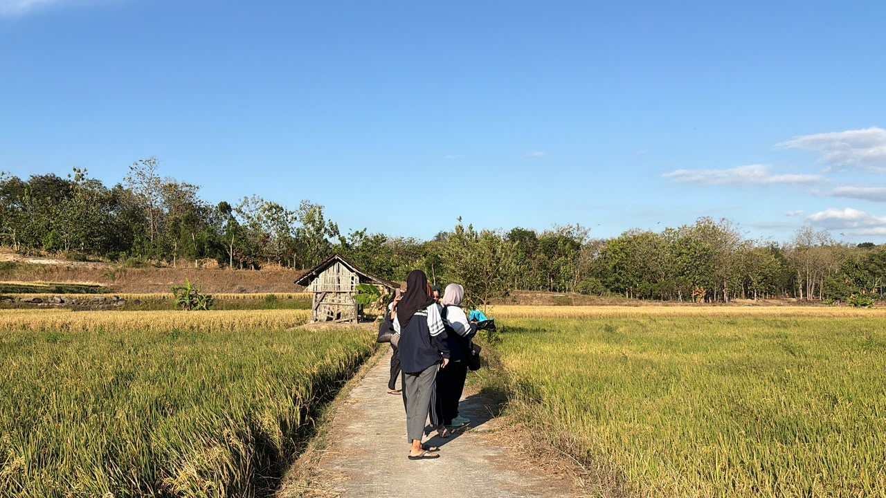
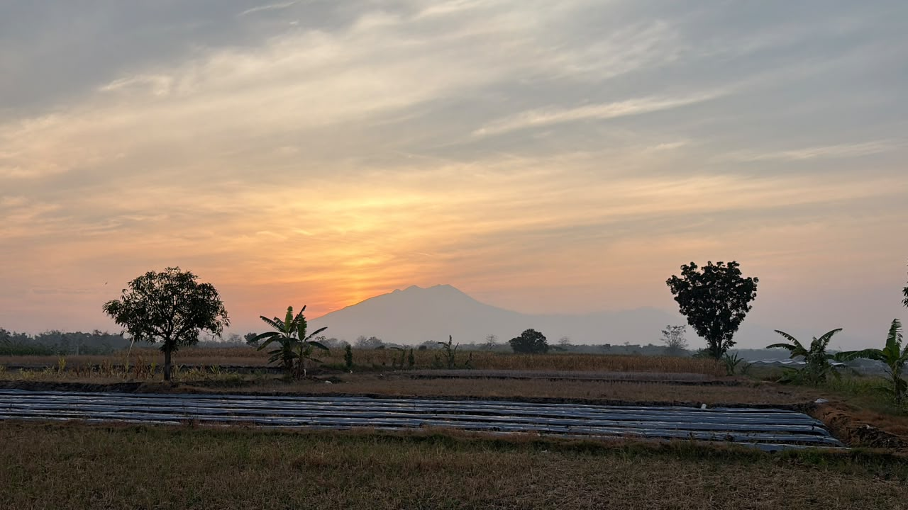

Kec. bendosari · Kab. Sukoharjo · Jawa Tengah
Menghirup kesegaran udara perbukitan, meresapi ketenangan alam pedesaan, dan merajut kedamaian di sudut Mojorejo.

Tentang Desa
Desa Mojorejo merupakan wilayah strategis di Kecamatan Bendosari yang dikenal dengan keramahan warga dan semangat gotong royongnya. Sebagai desa berkembang yang dinamis, kami berkomitmen untuk terus meningkatkan kualitas hidup masyarakat melalui pembangunan infrastruktur, pemberdayaan ekonomi lokal, dan pelayanan publik yang prima.
Melalui website ini, kami ingin memperkenalkan potensi UMKM, destinasi wisata, dan kegiatan masyarakat Desa Mojorejo kepada pengunjung dan wisatawan.
Potensi Desa
Produk lokal, destinasi wisata, dan fasilitas warga yang menjadi kebanggaan Desa Mojorejo.
Galeri
Kumpulan foto kegiatan masyarakat, produk UMKM, dan keindahan alam Desa Mojorejo.
Kontak
Untuk informasi lebih lanjut, kunjungi kantor desa atau hubungi kontak berikut.